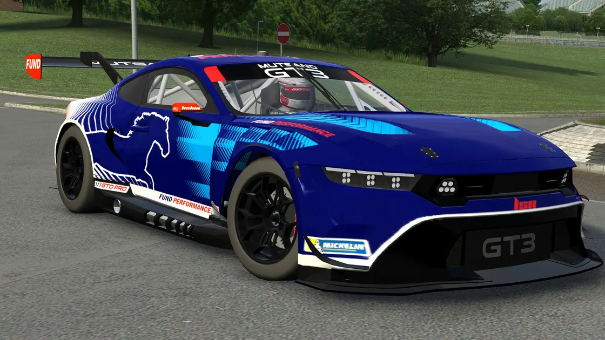
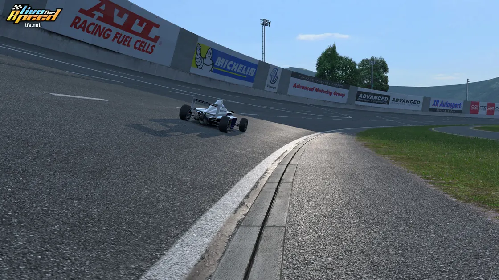
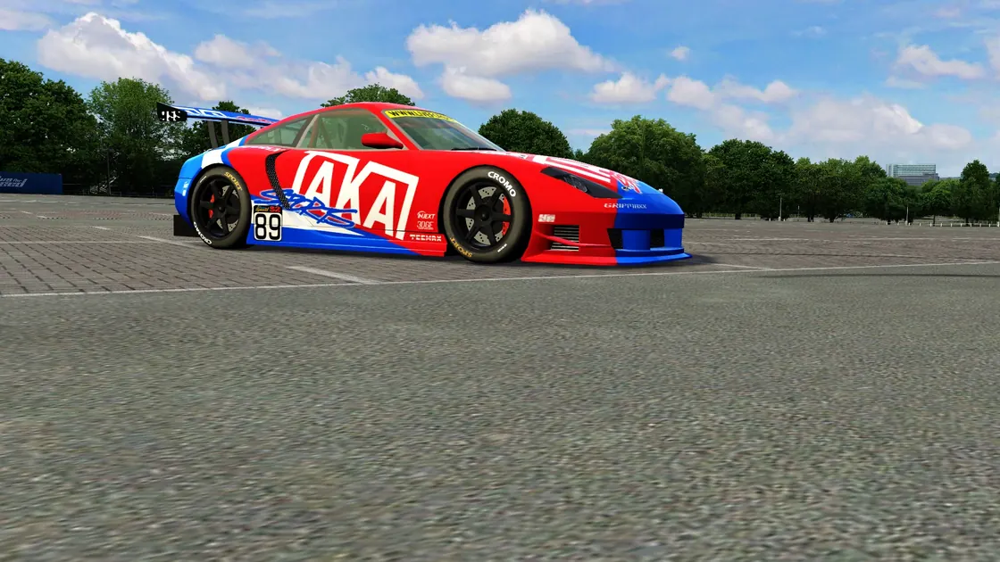
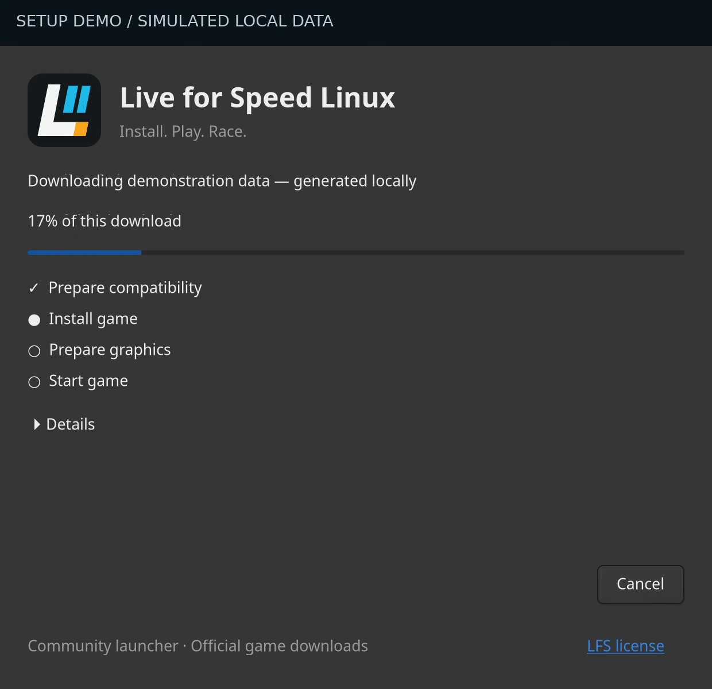
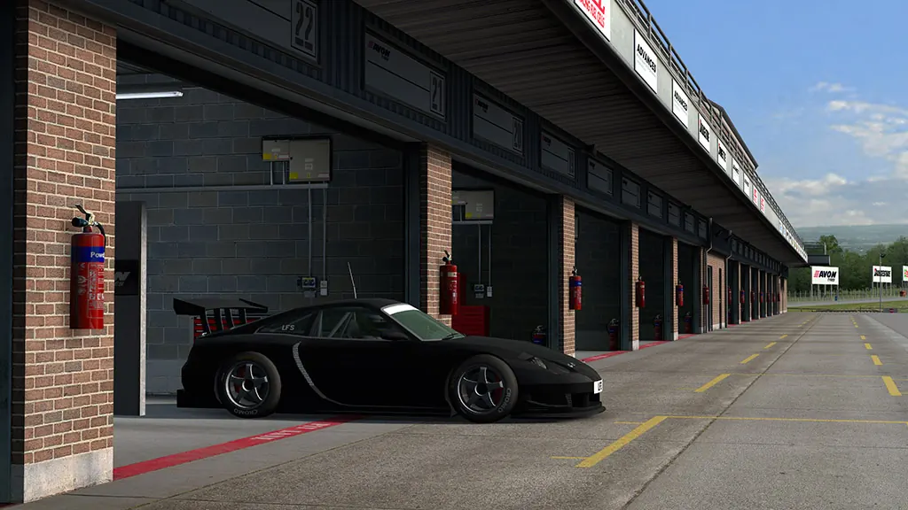
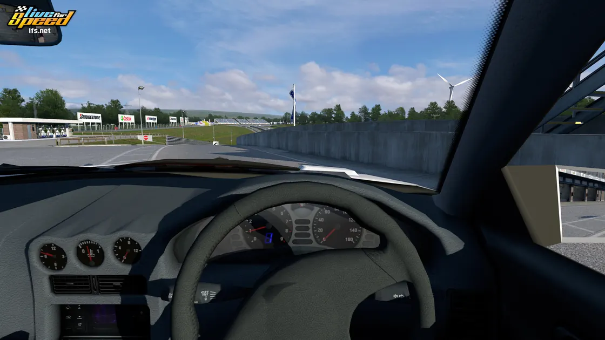

Debian / Ubuntu
Debian 13 · Ubuntu 24.04
Get .debTHE SIM YOU KNOW. THE DESKTOP YOU CHOOSE.
Get on track without the Wine setup. Install once, launch from your menu, and let LFS handle its own updates.
64-bit Linux · Vulkan graphics required
Debian 13 · Ubuntu 24.04
Get .debDirect .pkg.tar.zst package
Get ArchHelp test the full journey. Graphical installation and the game update/reopen flow still need real-world checks. See tested scope.
Debian / Ubuntu: open the .deb with your graphical package installer. Then open Live for Speed Linux from the application menu.
Arch / Manjaro: this is a direct test package. The AUR/Pamac route is not published or verified yet. Arch installation details ↗
No software-store listing is available. The game is downloaded separately during setup. Your LFS licence determines which cars and tracks you can use.
Release notes & checksums ↗
Other distributions & source installation ↗
LIVE FOR SPEED IN GAME



LFS screenshots. Visuals vary by build; community mods require S3.
FROM DOWNLOAD TO DRIVING
One application-menu icon, from first install to your next session. No terminal or Wine configuration for normal play.
Choose your package above and approve installation.
Review the download size and public-test notice. Follow setup progress; interrupted downloads can resume.
LFS updates itself. Follow its restart, exit normally, then reopen from your menu.

10.5-second interface demo. Simulated local data; no game files downloaded or changed.
THIS IS WHAT YOU CAME FOR
From the pit box to wheel-to-wheel racing.


Game screenshots from different LFS builds, including development images—not recordings of this Linux wrapper.
A LAUNCHER, NOT A GAME MANAGER
Update inside the game, restart, and play. No extra approval from the launcher.
Compatibility repair keeps the entire game, including settings, setups, replays and player data.
Official downloads and compatibility components are verified before use. No game binaries are bundled.
LET’S GET YOU BACK ON TRACK
GitHub sign-in is required. Reports are public. This page stores nothing and uses no external form service.
Describe it here. Your browser removes known private-data patterns and prepares the matching GitHub form. Nothing is sent until you review and submit on GitHub.
Prefer GitHub directly? Open a problem, compatibility, improvement, or experience form.
GOOD TO KNOW
The first installation starts with LFS 0.8C20 PUBLIC TEST (new graphics), Wine 11.15-1, and DXVK 3.0.2. The bootstrap pin is not your installed game version: LFS manages its own updates.
Linux x86_64 and a Vulkan-capable graphics driver are required. Debian 12 and Ubuntu 22.04 are not supported by the pinned runtime. See the full requirements.
v0.1.6 remains the old-graphics 0.7G fallback. It is a separate option for older graphics, not a way to downgrade or repair an updated game.
Setup checks the official LFS installer size and SHA-256, the complete game seed before first installation, Wine runtime files and links, and the private DXVK DLL copies.
Existing game content belongs to LFS and the player. Compatibility repair does not replace it. Read the architecture and ownership rules.